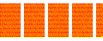

BOXES v5
In our previous lesson we created code that can fill a series of pages using many small boxes.
But only when those boxes are all alike. Once the boxes had different widths, the right side of our layout got all ragged. You surely have seen things like it when using word processors or reading web pages, where the text is all aligned on the left and all ragged on the right. It's called a "left-aligned" or "ragged-right" layout.
The reason is that we exceed the page width by a random amount, and then, when moving that box to the next row, we are left a random amount short of the desired width.
Could we make it look aligned on BOTH sides? Of course. Let's try.
This code is just like before:
class Box():
def __init__(self, x=0, y=0, w=1, h=1):
"""We accept a few arguments to define our box, and we store them."""
self.x = x
self.y = y
self.w = w
self.h = h
def __repr__(self):
"""This is what is shown if we print a Box. We want it to be useful."""
return 'Box(%s, %s, %s, %s)' % (self.x, self.y, self.w, self.y)
# Many boxes with varying widths
from random import randint
many_boxes = [Box(w=1 + randint(-5,5)/10) for i in range(5000)]
# A few pages all the same size
pages = [Box(i * 35, 5, 30, 50) for i in range(10)]
And of course, we need a new layout function. The plan is this:
- Organize boxes in rows, like before.
- When we are about to go too wide, see how much "slack" is left between the right side of our last box in the row and the edge of the page.
- Spread that slack by sliding all boxes slightly right so noone notices.
# We add a "separation" constant so you can see the boxes individually
separation = .2
def layout(_boxes):
# Because we modify the box list, we will work on a copy
boxes = _boxes[:]
# We start at page 0
page = 0
# The 1st box should be placed in the correct page
previous = boxes.pop(0)
previous.x = pages[page].x
previous.y = pages[page].y
row = []
while boxes:
# We take the new 1st box
box = boxes.pop(0)
# And put it next to the other
box.x = previous.x + previous.w + separation
# At the same vertical location
box.y = previous.y
# But if it's too far to the right...
if (box.x + box.w) > (pages[page].x + pages[page].w):
# We adjust the row
slack = (pages[page].x + pages[page].w) - (row[-1].x + row[-1].w)
bump = slack / len(row)
# The 1st box gets 0 bumps, the 2nd gets 1 and so on
for i, b in enumerate(row):
b.x += bump * i
# We start a new row
row = []
# We go all the way left and a little down
box.x = pages[page].x
box.y = previous.y + previous.h + separation
# But if we go too far down
if box.y + box.h > pages[page].y + pages[page].h:
# We go to the next page
page += 1
# And put the box at the top-left
box.x = pages[page].x
box.y = pages[page].y
# Put the box in the row
row.append(box)
previous = box
layout(many_boxes)
The drawing code needs no changes.
import svgwrite
def draw_boxes(boxes, name='lesson5.svg'):
dwg = svgwrite.Drawing(name, profile='full', size=(150, 60))
for page in pages:
dwg.add(dwg.rect(insert=(page.x, page.y),
size=(page.w, page.h), fill='yellow'))
for box in boxes:
dwg.add(dwg.rect(insert=(box.x, box.y), size=(box.w, box.h), fill='red'))
dwg.save()
draw_boxes(many_boxes)

Isn't that nice? If you look at it from afar it looks sort of familiar. Doesn't it?